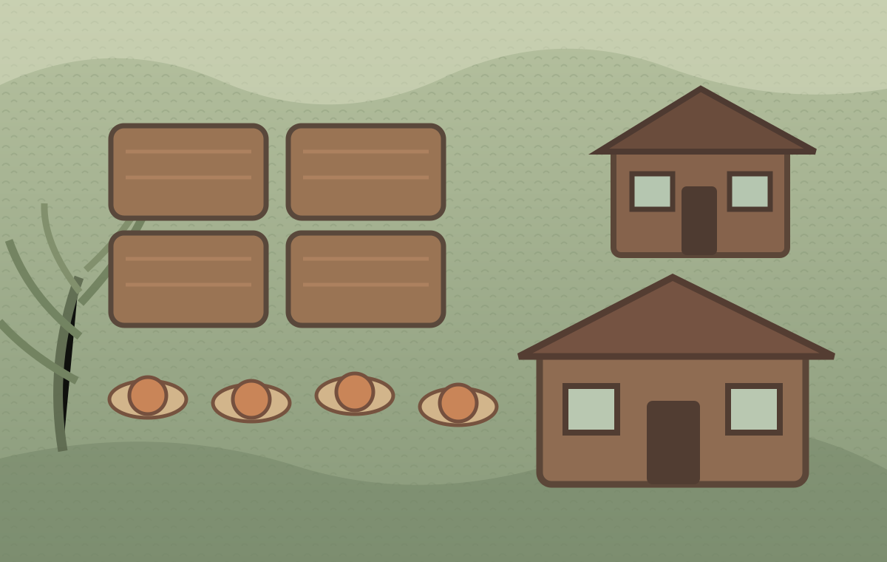
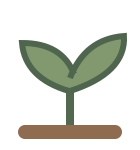

Pumpkin SeasonBuild 1 · Autumn Acres
Day 1
✦ 30


Autumn morning · Choose a plot
Tap a plot, then plant it. Watered crops grow when you end the day. Mature pumpkins can be harvested for 9 coins.
Your little farm is ready for its first autumn.